2026. 9. 25. – 10. 2. · 가족 넷
HOTEL
The Westin Resort & Spa Ubud, Bali
Jl. Lod Tunduh, Br. Kangetan, Ubud 80571 · 메리어트 포인트 4+1박 · 기본 룸
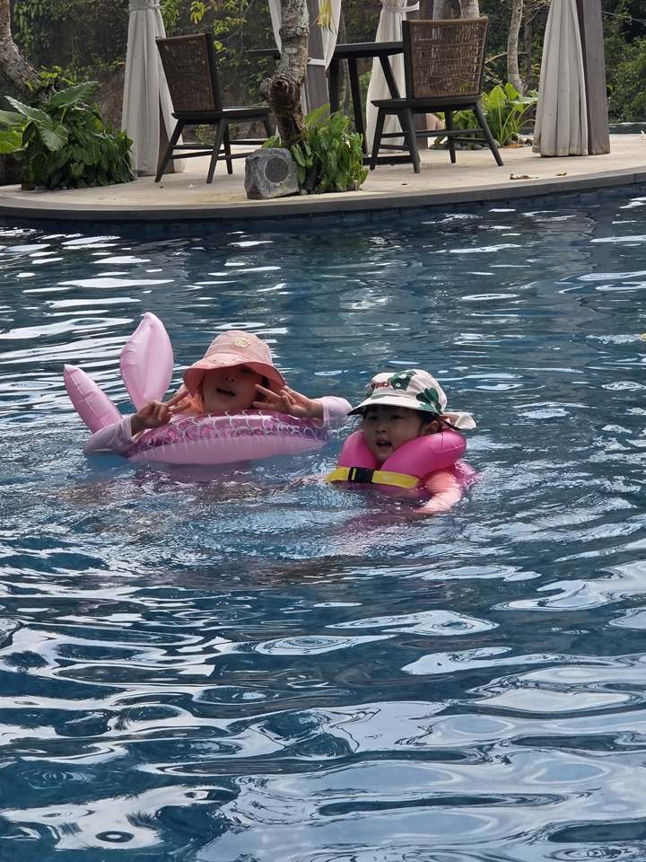
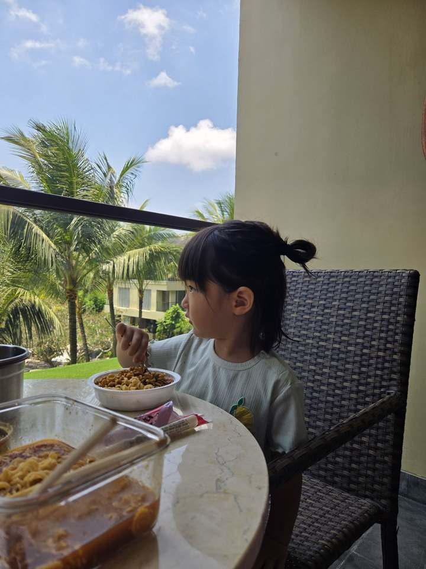
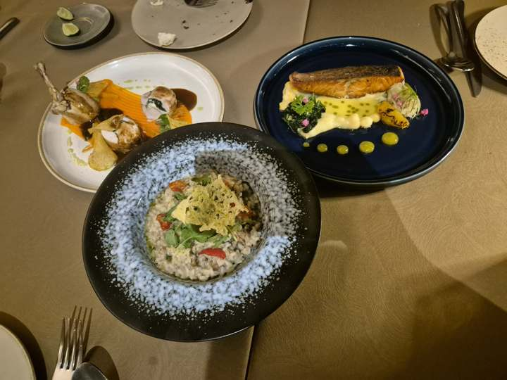
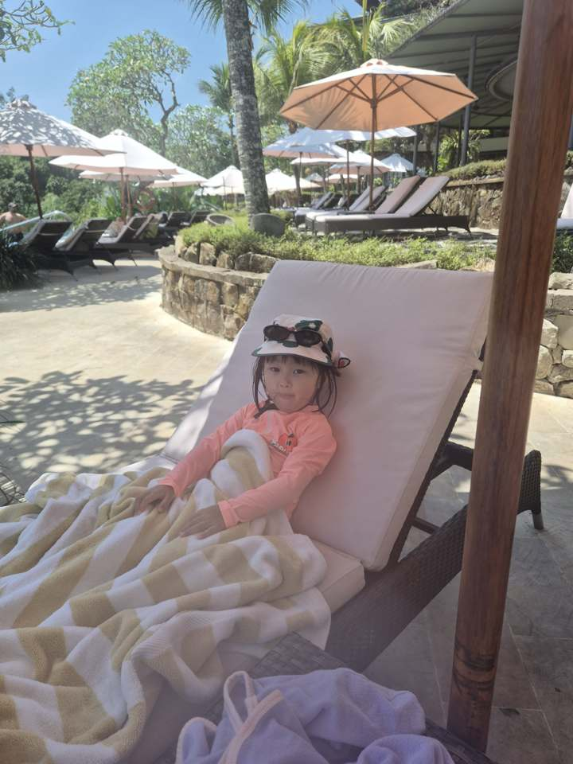
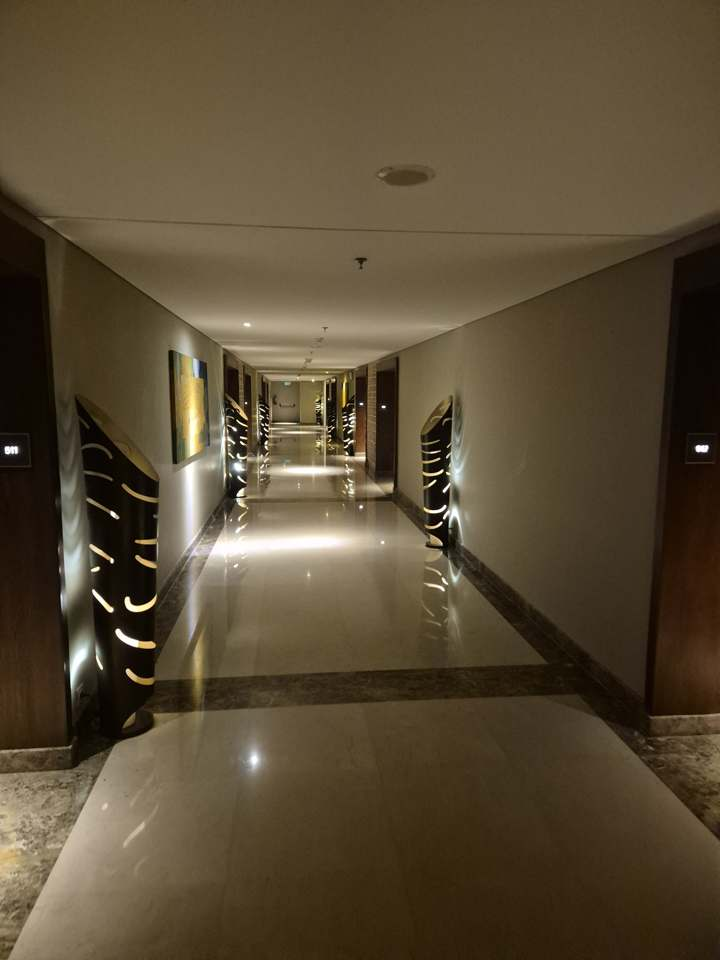
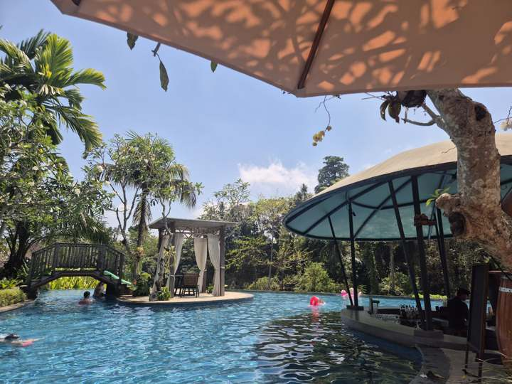
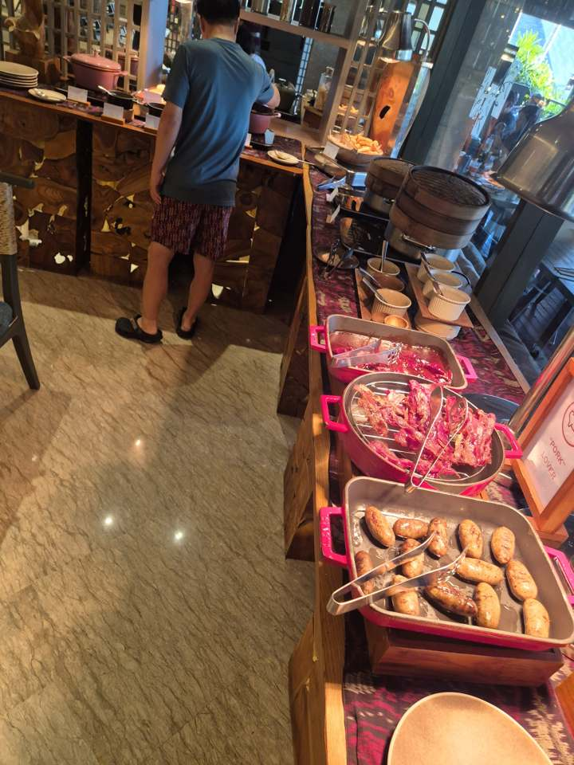
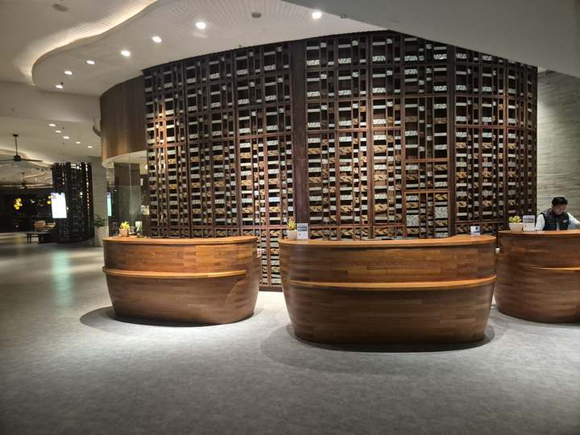
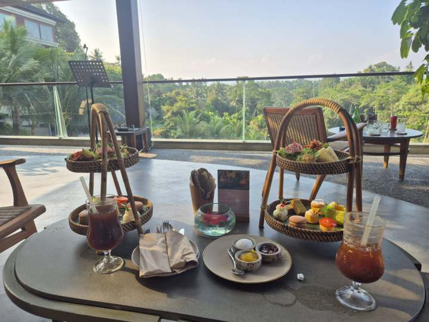
방
포인트로 간 기본 룸인데도 화장실이 꽤 넉넉하고 베란다가 따로 나온다. 베란다에서 야자수 보며 컵라면 먹고, 밤엔 달 보고.
조식 · 직원
조식 뷔페 훌륭. 포크 러버 코너에 베이컨·소시지가 따로 있고, 딤섬 찜기까지. 직원들이 전반적으로 친절하다.
키즈 라운지
애들 맡겨놓을 프로그램이 꽤 있고 직원이 잘 봐준다. 수영장은 계곡 쪽으로 열린 구조에 풀바·가제보·미끄럼틀까지 — 애들은 하루 종일 튜브.
점심 · 저녁
1층 수영장 쪽, 3층 조식당 쪽 두 군데. 맛은 좋은데(위 사진의 디너 — 메추리·연어·리조또) 가격이 저렴하진 않다. 점심 4인 5만원 안팎, 저녁 10만원대. 애프터눈티도 있다.
아쉬운 것
하드리쿼가 비싸다. 다음엔 면세점에서 사올 것.
총평: 아주 만족. 포인트 4+1로 이 급이면 재방문 1순위. 다음엔 위스키 한 병 면세로 들고 오기.
PLACE
우붓 왕궁(Puri Saren Agung) · 우붓 시내
호텔에서 택시 30분. 사람 꽤 많고 북적임. 왕궁은 무료 입장, 화요일 저녁엔 레공·라마야나 공연(10만 루피아).
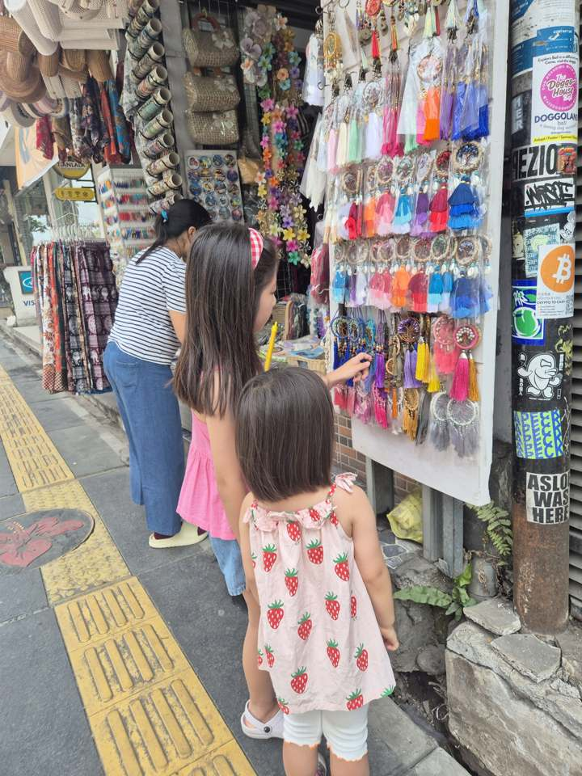
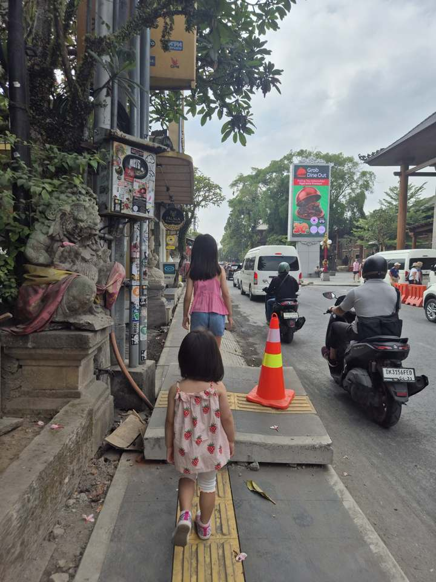
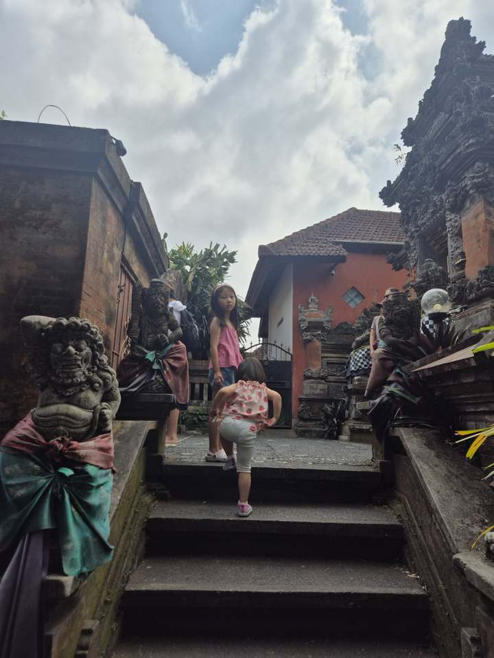
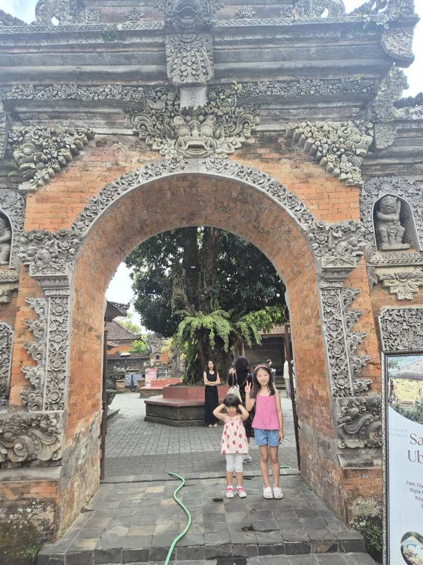
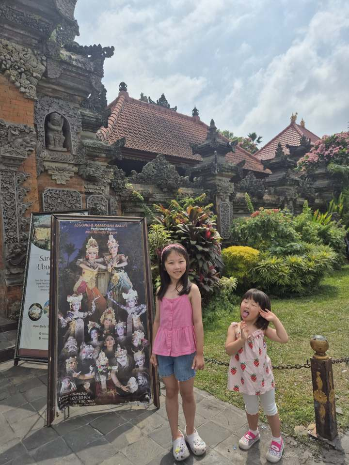
애들이 아직 어려서 걸어다니며 가게 구경하기엔 도로가 편하진 않다 — 인도가 좁고 끊기고, 오토바이가 바로 옆으로 지나간다. 적당한 쇼핑과 시내 맛집 구경에 적합한 정도.
호텔 밖 음식점은 다녀온 곳 정리되는 대로 추가